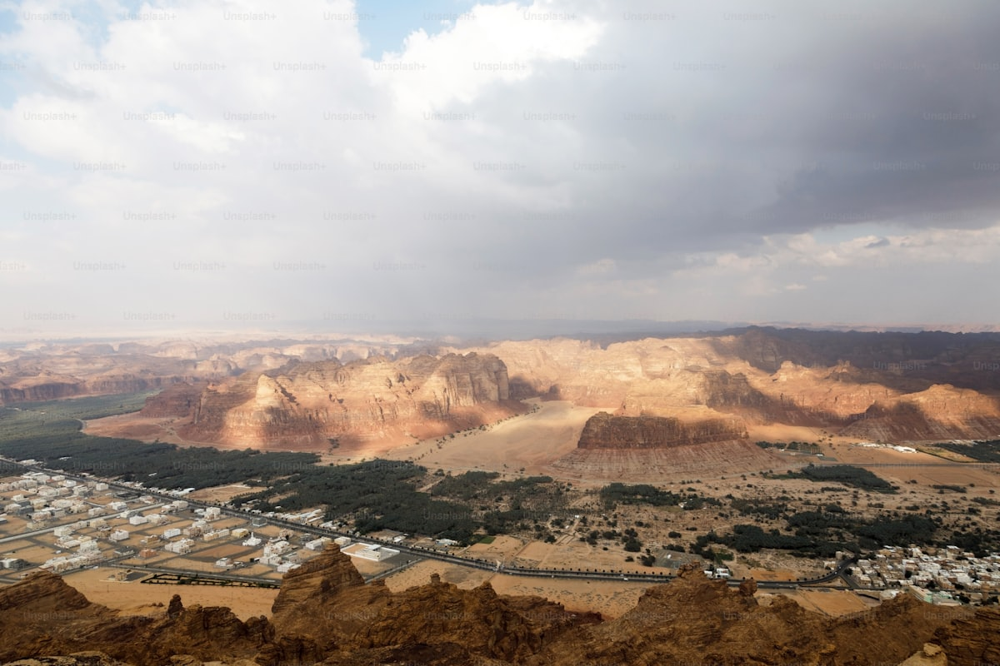
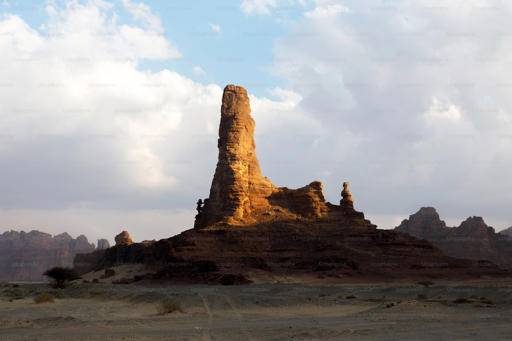
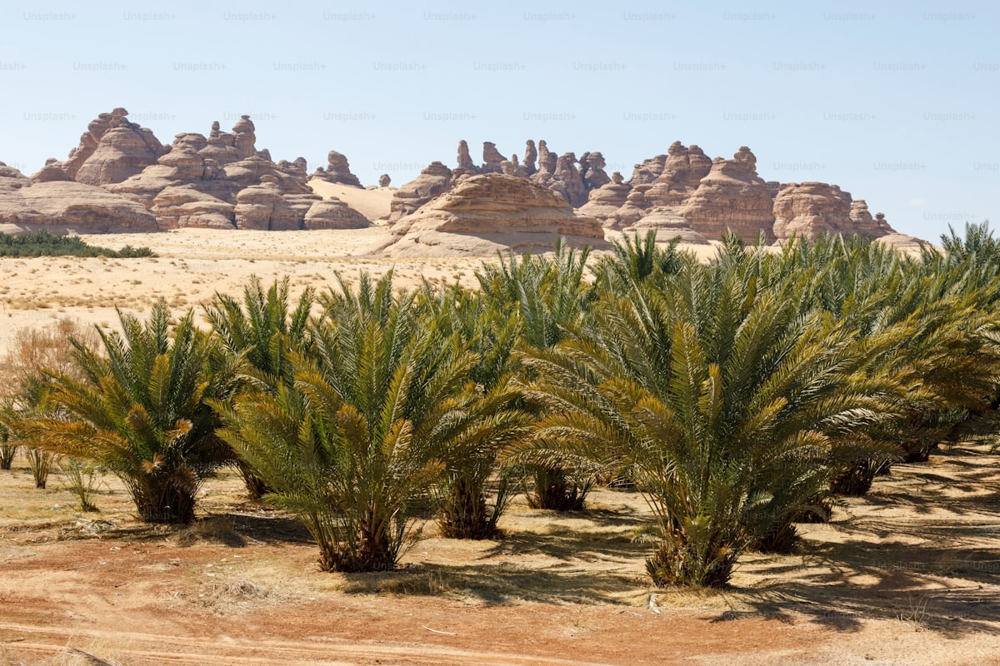
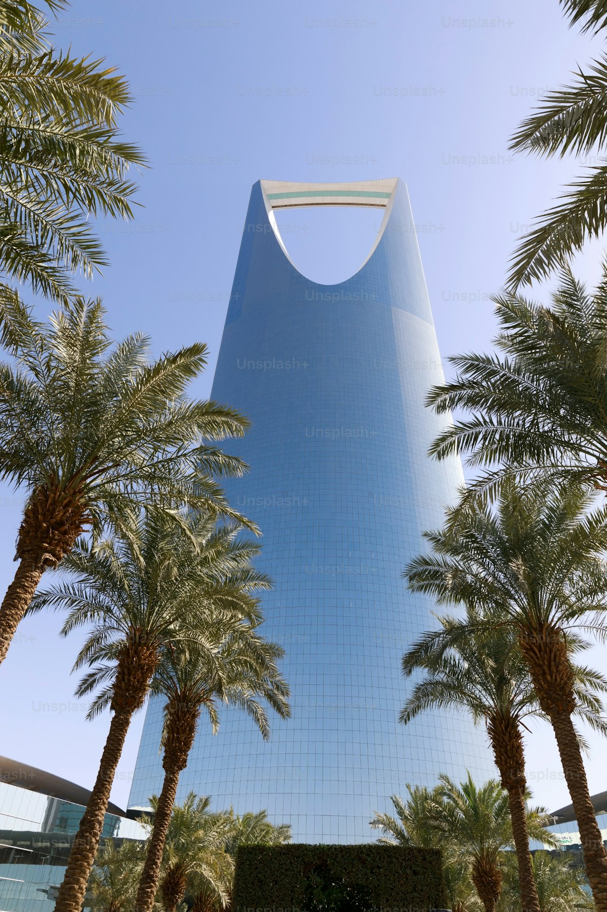
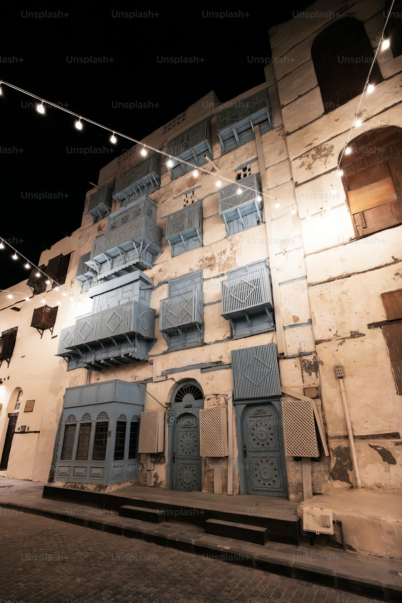
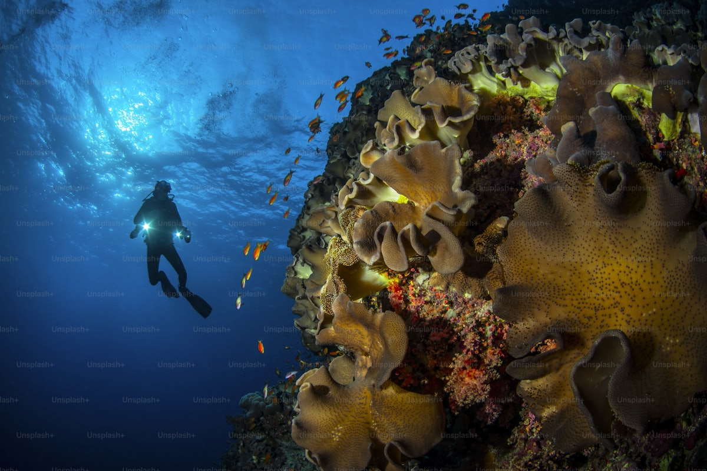
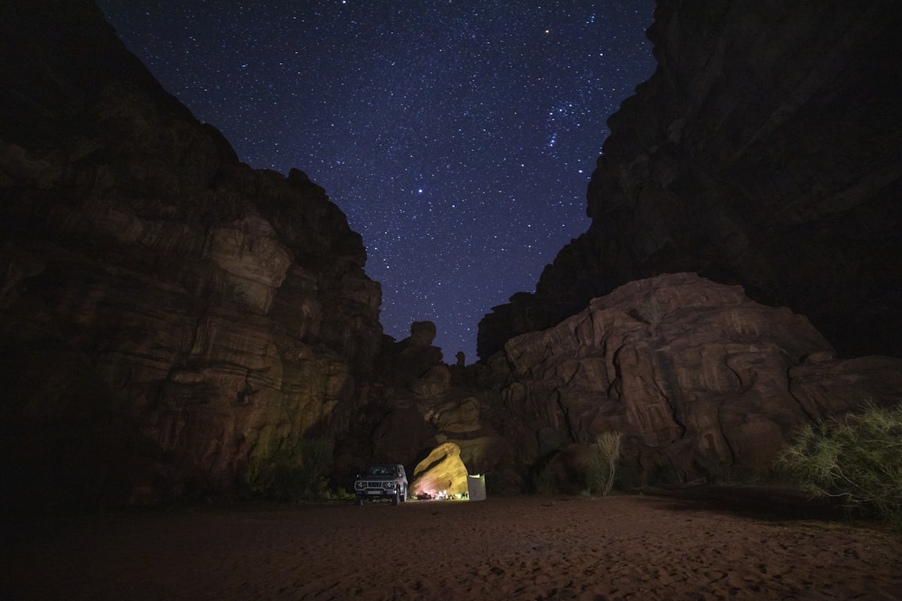
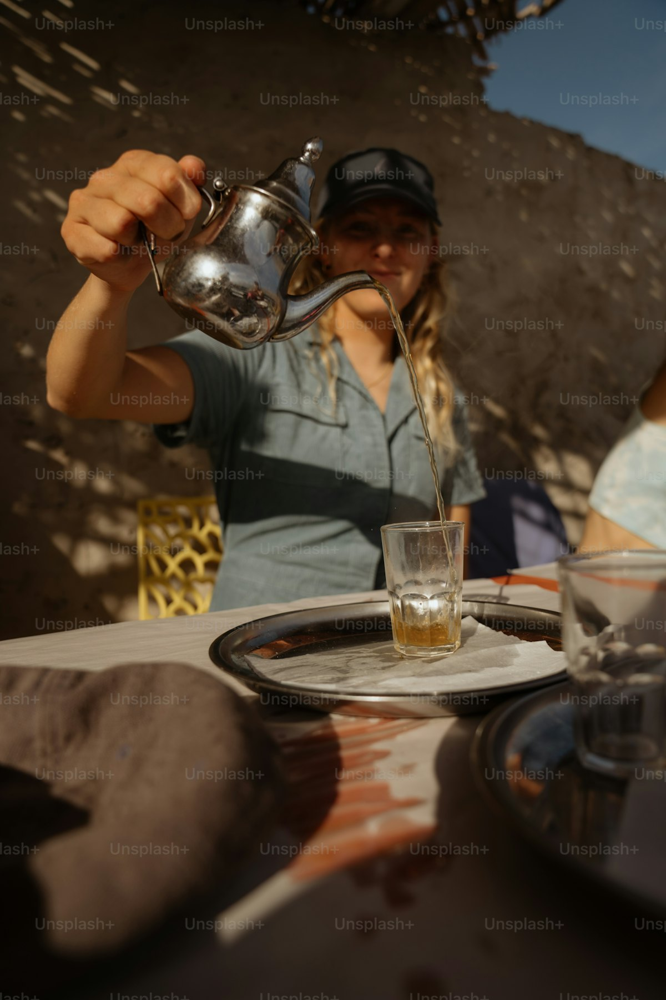

| 事项 | 结论 |
|---|---|
| 事项 | 结论 |
| 签证（最关键） | 中国护照沙特电子签 E-visa，一年多次、单次最长 90 天，费用约 445 沙里亚尔（约 850 元）；官网在线 3–10 分钟出签，入境需打印纸质件 |
| 麦加禁入 | 麦加及其周边对非穆斯林禁入，麦地那对游客开放参观；行程用麦地那（高铁一日）或塔伊夫替代 |
| 时差 | 比北京时间慢 5 小时（沙特不实施夏令时），直飞晚班机次日清晨抵利雅得 |
| 电源 | 230V / G 型三扁脚英式插座，必须带转换插头 |
| 货币 | 沙特里亚尔 SAR，1 人民币 ≈ 0.52 SAR；Visa/Master 信用卡普及，老城与小店需现金 |
| 最佳季节 | 11 月–次年 2 月（20–30°C）最舒适，是黄金旅游季；6–8 月白天 40°C+，不建议夏季出行 |
| 安全 | 治安良好、游客安全评级高；女性游客无需黑袍，但公共场合着装宜保守（长裤长袖） |
| 语言/网络 | 阿拉伯语为主、英语通用（打车/景区均可沟通）；主要城市 5G 覆盖好，酒店免费 WiFi |
以下为 12 天 11 晚的推荐节奏：三城按「首都 → 沙漠绿洲 → 红海门户」推进，每日主景点 ≤2 个，城市间用国内航班 + 哈拉曼高铁衔接。
| 日期 | 行程 | 过夜地 | 主题 |
|---|---|---|---|
| D1 抵利雅得 | 北京✈利雅得直飞约 10.5–11.5h，抵达后入住市中心，倒时差休息 | 利雅得 | 抵达+调整 |
| D2 | 马斯马克堡垒 → 老城集市 → 德拉伊耶古城（世界遗产） | 利雅得 | 开国历史 |
| D3 | 国王塔观景台 → 沙特国家博物馆 → 阿法沙利亚塔 | 利雅得 | 现代都市 |
| D4 | 利雅得✈埃尔奥拉（1h45m），埃尔奥拉老城漫步+观日落 | 埃尔奥拉 | 飞绿洲 |
| D5 | 黑格拉 Hegra 全天：纳巴泰古墓群+孤峰墓（世界遗产） | 埃尔奥拉 | 世界遗产日 |
| D6 | 德丹古城 → 玛拉雅镜面音乐厅 → 大象岩看日落 | 埃尔奥拉 | 峡谷奇观 |
| D7 | 埃尔奥拉✈吉达，滨海大道漫步 + 法赫德国王喷泉夜景 | 吉达 | 红海门户 |
| D8 | 巴拉德老城 → 阿拉维集市 → 纳西夫宫 | 吉达 | 老城漫步 |
| D9 | 红海潜水半日 → 海上清真寺 → 滨海大道日落 | 吉达 | 红海日 |
| D10 | 吉达⇄麦地那 高铁当日往返（先知清真寺） | 吉达 | 圣城一日 |
| D11 | 吉达✈利雅得 → 自由购物补漏 → 国王塔夜景收官 | 利雅得 | 返首都 |
| D12 返程 | 利雅得✈北京直飞约 10.5h，机场免税补货后返程 | — | 收尾 |
以下为 12 天全程的逐小时执行时间线，可当作「当天打开照着走」的清单。标注 ※ 的可选项视体力与天气取舍。
| 时间 | 事项 |
|---|---|
| 23:00–次日09:30 | 北京首都✈利雅得哈利德国王机场（沙特航空 SV889 直飞约 10.5–11.5h，晚班机出发、次日清晨抵达） |
| 09:30–11:00 | 入境：电子签 E-visa 扫护照即可，提前打印备查；机场换少量沙里亚尔现金、买本地 SIM 卡 |
| 11:30–13:30 | 打车/地铁进市中心 Al Olaya 商圈入住，补觉倒时差（时差 -5h） |
| 15:00–17:00 | 就近散步：王国中心外景或阿法沙利亚塔周边，第一杯阿拉伯咖啡+椰枣 |
| 18:00–20:00 | 晚餐：沙特国菜 Kabsa 羊肉手抓饭，早点休息调整 |
| 时间 | 事项 |
|---|---|
| 08:30–10:00 | 马斯马克堡垒 Masmak（免费）：1902 年阿卜杜勒·阿齐兹收复利雅得的土砖城堡，清晨人少出片 |
| 10:00–11:30 | 老城集市 Al-Zal（免费）：传统布料、香料、阿拉伯香水铺，砍价空间大 |
| 12:00–13:00 | 老城区午餐：沙特烤肉卷或 Mansaf 羊肉大餐 |
| 13:30–17:00 | 德拉伊耶古城 Diriyah（图拉伊夫区世界遗产，门票约 50 SAR）：泥砖古城+开国博物馆，日落光线最好 |
| 19:00 | 返回市区，晚餐：Al-Najdiyah Village 传统纳吉迪餐厅（现场音乐+炭火烤羊） |
| 时间 | 事项 |
|---|---|
| 09:00–11:30 | 国王塔 Kingdom Centre（观景台约 60–70 SAR）：99 层观景台+300 米空中天桥，俯瞰全城 |
| 11:30–13:00 | 王国中心商场午餐（意餐/汉堡馆），顺手看沙特时尚品牌 |
| 14:00–16:30 | 沙特国家博物馆（约 15 SAR）：从史前沙漠到开国史诗的全史陈列，穹顶庭园很出片 |
| 16:30–18:00 | 阿法沙利亚塔 Al Faisaliah（免费）：玻璃球观景台+高端商场 |
| 19:00–21:00 | 可选：Riyadh Season 利雅得季节活动（秋冬季）或老城夜市，晚餐沙威玛/海鲜 |
| 时间 | 事项 |
|---|---|
| 08:00–09:45 | 利雅得✈埃尔奥拉 ULH 机场（flynas/Saudia 约 1h45m，提前订约 300–600 元） |
| 10:00–11:30 | 入住老城/机场周边，预订 shuttle 或租越野车 |
| 12:00–14:00 | 埃尔奥拉老城 AlUla Old Town（约 20 SAR）：900 年泥砖老城巷弄+山顶观景台 |
| 15:00–17:00 | 埃尔奥拉露天博物馆或 Mughaira 峡谷（可选），或回酒店泳池躲午后烈日 |
| 18:00–20:00 | 老城咖啡馆看日落，夜宿沙漠绿洲，抬头即银河 |
| 时间 | 事项 |
|---|---|
| 08:30 | Experience AlUla 官网预约的黑格拉导览团出发（含接送+英文向导） |
| 09:00–12:00 | 黑格拉 Hegra 前区：纳巴泰古墓群，Jabal AlBanat 墓群+2000 年前的水利系统讲解 |
| 12:00–13:30 | 景区内午餐+休息（沙地暴晒，随时补水） |
| 13:30–16:30 | 主墓区：Qasr Al-Farid 孤峰墓（"孤独城堡"）、巨型全景墓、奥斯曼铁路旧站 |
| 17:00 | 返回老城，日落+晚餐 |
| 时间 | 事项 |
|---|---|
| 08:30–11:30 | 德丹古城 Dadan（与 Jabal Ikmah 联票约 60 SAR）：6000 年前德丹王国首都遗址+狮身墓雕 |
| 11:30–13:00 | 午餐：老城咖啡馆（骆驼奶拿铁/中东早餐） |
| 14:00–16:00 | 玛拉雅音乐厅 Maraya（外观免费，演出 95 SAR 起）：全球最大镜面建筑，反射沙漠峡谷 |
| 16:30–18:30 | 大象岩 Elephant Rock（免费，16:00 后开放）：2000 万年风化巨岩，日落黄金时刻 |
| 19:00 | 可选沙丘晚餐/星空体验（约 300–500 元），夜宿埃尔奥拉 |
| 时间 | 事项 |
|---|---|
| 09:00–10:20 | 埃尔奥拉✈吉达阿卜杜勒·阿齐兹国际机场（约 1h20m，提前订约 400–700 元） |
| 10:30–12:00 | 入住滨海大道附近，午餐轻食 |
| 13:00–15:00 | 补觉/泳池休息（吉达比沙漠更潮热） |
| 15:30–18:00 | 吉达滨海大道 Corniche（免费）：椰枣林步道+海上艺术雕塑群 |
| 18:30–20:30 | 法赫德国王喷泉（免费）：世界最高喷泉（312 米），日落+夜景双打卡，晚餐海鲜 |
| 时间 | 事项 |
|---|---|
| 08:30–11:30 | 巴拉德老城 Al-Balad（免费，UNESCO 2014）：珊瑚石墙+Roshan 木窗塔楼，迷宫巷弄 |
| 11:30–13:00 | 阿拉维集市 Souq Al-Alawi（免费）：香料、蜂蜜、香薰与手工艺老铺 |
| 13:00–14:00 | 老城午餐：Samboosa 炸饺+沙威玛 |
| 15:00–17:00 | 纳西夫宫 Nassif House（约 20 SAR）：百年商贾豪宅，木质廊桥+珊瑚石庭院 |
| 18:00 | 老城屋顶咖啡馆看日落，晚餐巴拉德广场夜市 |
| 时间 | 事项 |
|---|---|
| 08:00–12:00 | 红海潜水（2 潜船潜约 120–160 美元/800–1100 元）：珊瑚礁+海豚海龟，含装备与酒店接送 |
| 12:30–13:30 | 码头午餐：烤鱼/大虾 |
| 15:00–17:00 | 海上清真寺 Al-Rahma（免费）：浮在红海上的白色清真寺，涨潮时更出片 |
| 17:30–19:00 | 滨海大道骑行/散步，看夕阳下的红海 |
| 19:30 | 海鲜晚餐：红海烤龙虾+阿拉伯大饼 |
| 时间 | 事项 |
|---|---|
| 07:00–09:00 | 吉达站乘哈拉曼高铁至麦地那（约 2h，经济舱约 100–150 SAR，官网实名购票） |
| 09:30–13:00 | 先知清真寺 Masjid Nabawi（免费，非穆斯林可进入主殿广场）：绿色穹顶+白色大理石广场 |
| 13:00–14:00 | 麦地那午餐：沙特烤鸡/椰枣 |
| 14:30–17:30 | 库巴清真寺（伊斯兰第一座清真寺）+ 麦地那老市场（可选） |
| 18:00–20:00 | 高铁返吉达，晚餐补漏 |
| 时间 | 事项 |
|---|---|
| 09:00–10:30 | 吉达✈利雅得（约 1.5h） |
| 11:30–13:00 | 午餐：王国中心广场周边 |
| 13:30–16:00 | 自由购物补漏：国王塔商场/老城集市手信（椰枣、乌木香、手工地毯） |
| 16:30–18:30 | 可选：阿卜杜拉国王金融区 KAFD 现代建筑漫步 |
| 19:00–21:00 | 国王塔观景台夜景收官，晚餐 Al-Najdiyah 或商场美食广场 |
| 时间 | 事项 |
|---|---|
| 07:00–08:30 | 早餐+退房，打车到哈利德国王机场（提前 3h 到） |
| 09:00–10:00 | 机场免税店：椰枣礼盒、沙特香精、藏红花 |
| 10:30–21:00 | 利雅得✈北京直飞约 10.5h，入境到家 |
必去（必去）/ 顺路（顺路）/ 可跳过（可跳过）。

必去
必去
必去
必去
必去
顺路
顺路图片为 Unsplash 主题图（埃尔奥拉绿洲、纳巴泰山岩、利雅得天际线、吉达巴拉德老城、红海潜水、沙漠星空等均为沙特实景），用于页面配图。更多免费体验：马斯马克堡垒、吉达滨海大道、法赫德国王喷泉、海上清真寺、大象岩日落。
点击左侧节点可在地图上定位；点击地图 marker 会高亮对应节点。坐标为 WGS-84 转 GCJ-02 纠偏后标注。
以下为单人、不含购物的估算，人民币计价；出发地基准北京。汇率按 1 元 ≈ 0.52 沙特里亚尔估算。往返机票按淡季 4500–7500 元计，旺季（11–2 月）贵 20–30%。
| 项目 | 经济（12000–18000） | 标准（22000–32000） | 舒适（50000–70000） |
|---|---|---|---|
| 往返机票 | 北京⇄利雅得 转机 3800–5000 | 直飞往返 5500–7500 | 直飞商务舱 15000–25000 |
| 住宿（11 晚） | 青旅/经济连锁 2500–3800 | 商务酒店 7000–13000 | 五星/沙漠度假村 18000–40000 |
| 国内机票（3 段） | 利雅得-埃尔奥拉-吉达-利雅得 1200–1800 | 提前订含行李 2000–2800 | 可改时段+商务 4000–6000 |
| 门票与活动 | 黑格拉+博物馆 800–1200 | 含潜水/夜游/向导 2500–3500 | 私人团+多次潜水 6000–10000 |
| 餐饮（12 天） | 快餐+超市 1800–2500 | 正餐馆子 3500–5000 | 度假村+特色餐厅 8000–12000 |
带娃推荐：埃尔奥拉减少为 2 天（黑格拉半天+大象岩日落），吉达增加海洋馆与红海浮潜（无证也可，8 岁以上）；砍掉潜水改滨海大道骑行。沙特家庭旅游设施成熟，沙漠露营孩子会很兴奋，但注意夏季不要安排白天户外。
冬季优先埃尔奥拉星空与红海潜水（水温舒适 20°C+），利雅得叠加 Riyadh Season 国际美食节；麦地那高铁一日照常。冬夜沙漠气温可到 10°C，露营带抓绒外套与暖宝宝。
| 方式 | 时长 | 参考价 | 备注 |
|---|---|---|---|
| 直飞（推荐） | 北京→利雅得约 10.5–11.5h | 往返 4500–7500 元 | 沙特航空 SV889，首都机场出发，每周数班 |
| 转机 | 14–20h | 3500–5000 元 | 经迪拜/阿布扎比/多哈，转机时间需确认行李直挂 |
| 北京⇄吉达 | 直飞约 11h / 转机 15h+ | 5000–8000 元 | 沙特航空偶有吉达直飞，多数经转机；优先飞利雅得再国内接驳 |
| 区域 | 价格/晚 | 优点 | 短板 |
|---|---|---|---|
| 利雅得·Al Olaya 商圈 | 经济 250–450 / 标准 600–1200 | 近王国塔、地铁与商场，出行方便 | 周五晚祈祷时段商家歇业 |
| 利雅得·老城（Al Batha） | 经济 200–350 | 近马斯马克与老集市，烟火气浓 | 酒店偏旧，环境一般 |
| 埃尔奥拉·老城/机场周边 | 标准 800–1600 / 旺季 2000+ | 近黑格拉接驳点 | 房量少，旺季提前 1 个月订 |
| 埃尔奥拉·Habitas 度假村 | 舒适 3000–6000 | 峡谷与星空景观，帐篷野奢体验 | 价格高，需很早预订 |
| 吉达·滨海大道 | 标准 500–1000 / 舒适 1200–2500 | 海景+法赫德喷泉景观 | 距老城打车约 10–15 分钟 |
| 吉达·巴拉德老城周边 | 经济 300–500 | 步行逛老城与集市 | 设施较旧，隔音一般 |